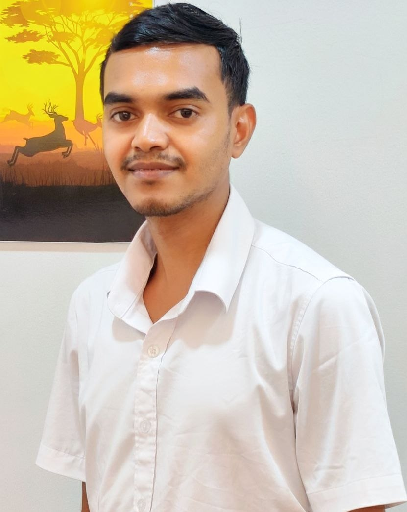
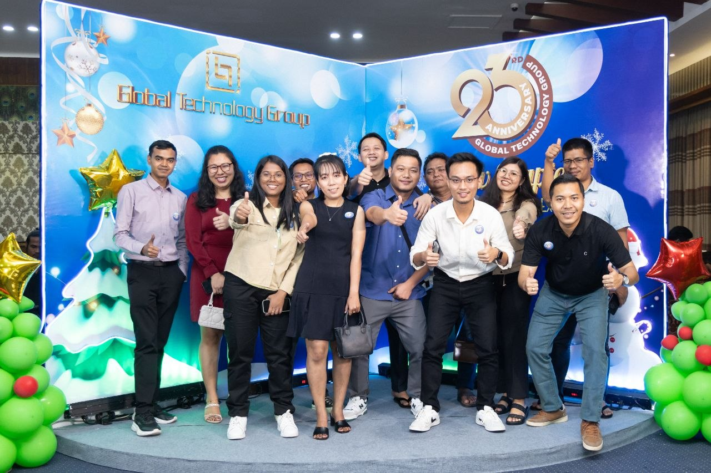
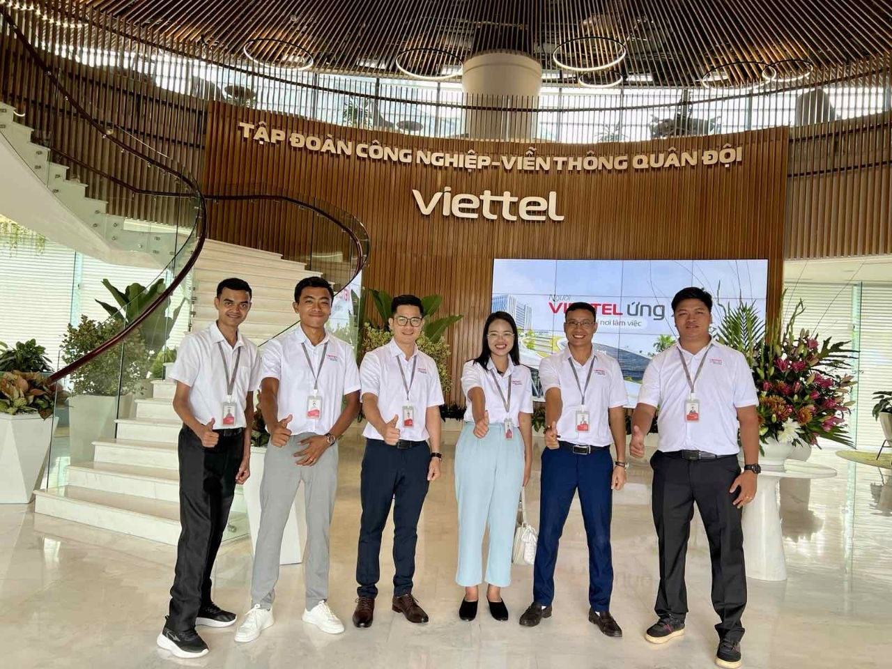
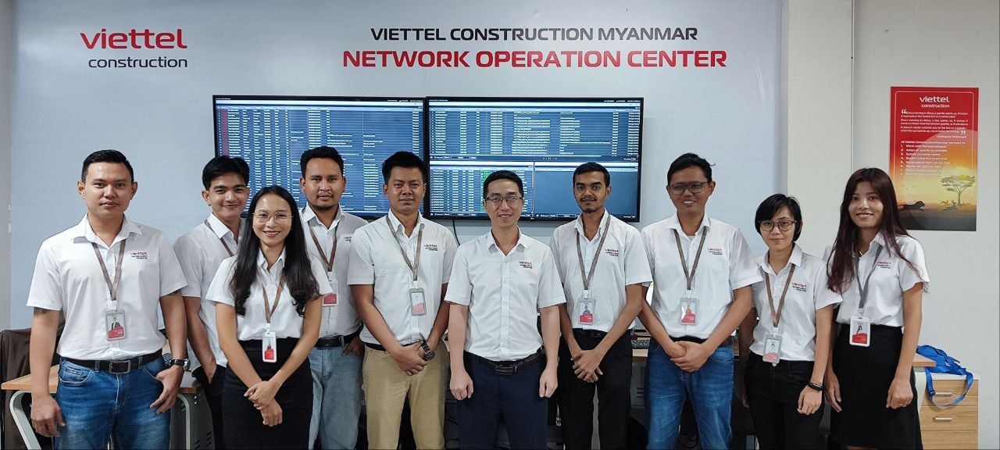
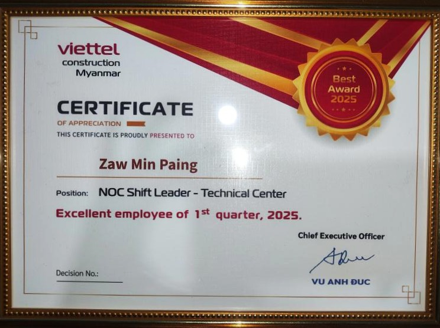
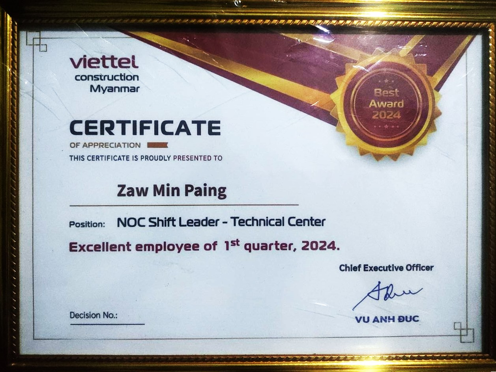
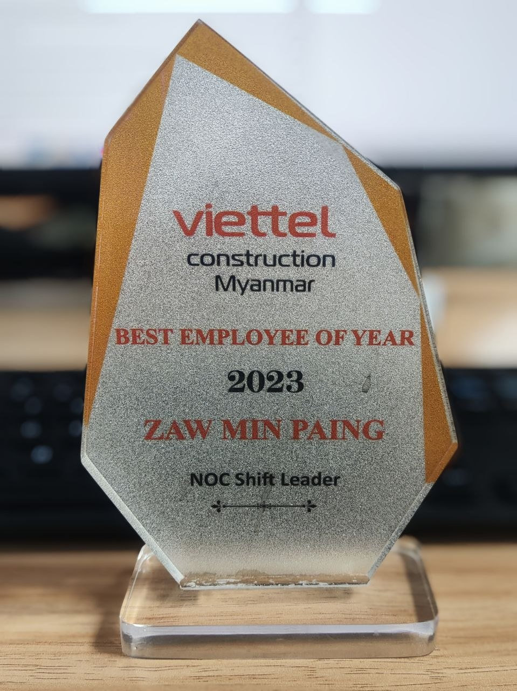
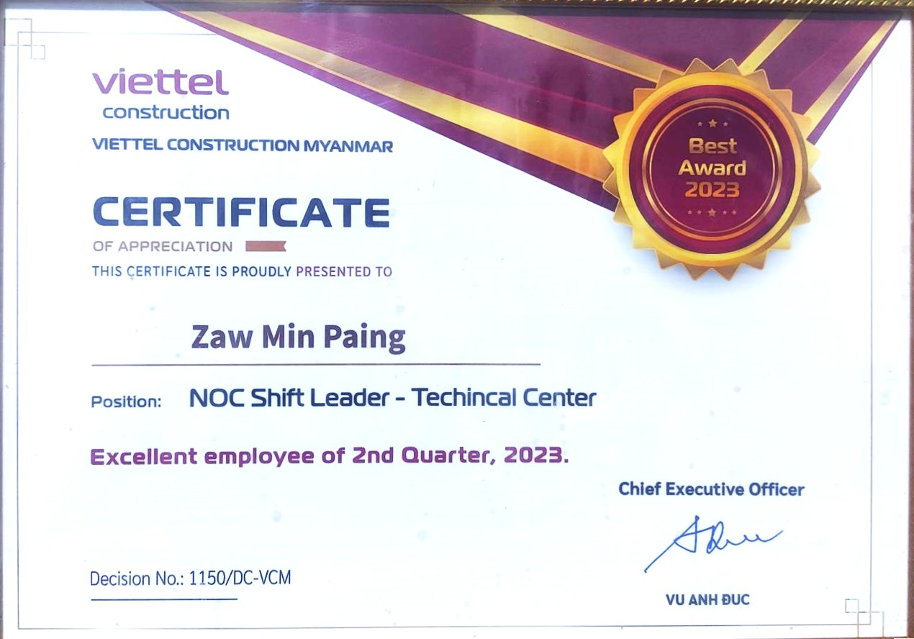
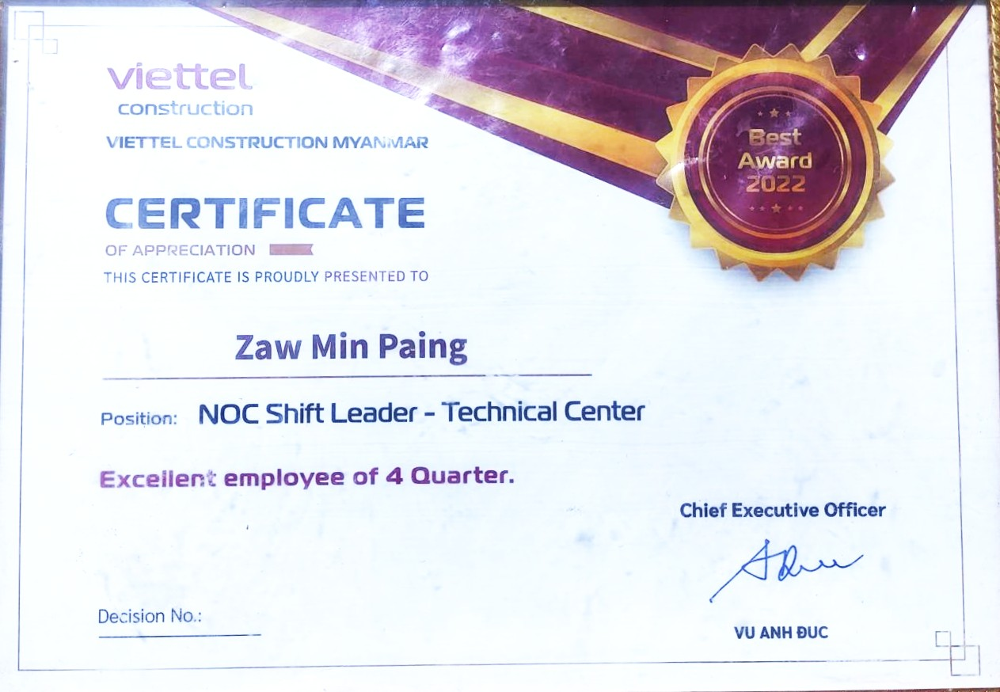

Zaw Min Paing
Telecom Network & NOC Management Professional 🌐
About Me
Experienced manager with a robust background in Telecom Network Technologies, Physical IP & DWDM Networks, Radio Access Networks and Data Center. Adept in Incident Management, NOC Management, and Customer Relationship Management, with a specialized focus on Network Monitoring, Leadership, Team Management, Incident Resolution and Data Analytics 📊.
Work Experience
SLA Manager 🏢 Global Technology Co. Ltd.
08/2025 - 03/2026
- Collaborated with cross-functional teams to monitor SLA Metrics and address the service issues.
- Refined SLA Terms for enterprise contracts.
- Reviewed SLA Performances, facilitated contract renewals and negotiated SLA Commitments.
- Partnered with cross-functional teams to build SLA based proposals tailored to customer needs.
- Managed the implications of SLA Breaches, including risk mitigation, penalties and customer communication 📈.
NOC Shift Leader 🏢 Viettel Construction Myanmar
10/2022 - 07/2025
- Ensure optimal network service availability and operational efficiency across the organization, achieving 99.9% availability to enhance customer satisfaction and meet SLA targets.
- Orchestrated the Telecom O&M Project with a team of 20 NOC shift members, overseeing the management of BTS sites and fiber cable routes across 16 branches.
- Spearheaded training initiatives, imparting expertise on network infrastructure, NMS tools, and NOC processes to new joiners and team members, fostering a skilled workforce 👨🏫.
- Led the management of major network incidents, collaborating with internal teams, vendors, and clients to minimize service outages and adhere to SLA targets.
- Analyzed daily, weekly, and monthly network outage reports for BTS and cable routes, providing actionable insights and proposing solutions for network improvements to mitigate service disruptions.
- Facilitated seamless coordination between branches and teams, ensuring timely updates on ground handover data and team assignments for smooth operational workflows.
- Monitored and validated monthly KPIs of branches and teams, providing detailed reports to the Board of Directors (BODs) and Chief Technology Officer (CTO) for informed decision-making.
- Managed SLA reconciliation with customers on monthly basis, fostering strong relationships and ensuring alignment with service level commitments 🤝.
NOC Engineer 🏢 Viettel Construction Myanmar
11/2020 - 10/2022
- Ensure seamless operation and optimal performance of network infrastructure, deliver timely reports and resolving network issues to enhance customer satisfaction.
- Implemented proactive monitoring strategies to swiftly detect and analyze alarms at BTS stations, encompassing radio, power, and transmission issues, ensuring minimal service disruption ⚡.
- Utilized advanced Network Monitoring Systems including iManager U2000, iMaster NCE (Huawei), and NetNumen to diagnose network problems efficiently, resolving issues independently or coordinating on-site rectification with field teams promptly.
- Demonstrated exceptional problem-solving skills in tracking and resolving cable incidents and transmission network problems, implementing temporary solutions as required and providing comprehensive updates until permanent resolution.
- Maintained effective communication with internal and external stakeholders, delivering regular updates on incident progress and resolution, ensuring transparency and trust.
- Fostered effective collaboration with field operations teams and customers, facilitating the swift resolution of network issues and continuous improvement in service quality.
- Conducted thorough investigations to identify root causes of network problems, leveraging findings to recommend and implement preventive measures, thereby minimizing the occurrence of future incidents 🔍.
Education Background
🎓 Bachelor of Engineering in Electronics
Technological University (Toungoo) | 12/2016 - 09/2019
🎓 Bachelor of Technology in Electronics
Technological University (Toungoo) | 12/2012 - 09/2016
Skills
Technical Skills
Management Skills
Soft Skills
Achievements

Excellent Employee of 1st Quarter 2025
Viettel Construction Myanmar

Excellent Employee of 1st Quarter 2024
Viettel Construction Myanmar

Best Employee of Year 2023
Viettel Construction Myanmar

Excellent Employee of 2nd Quarter 2023
Viettel Construction Myanmar

Excellent Employee of 4th Quarter 2022
Viettel Construction Myanmar
Languages
- 🇲🇲 Burmese - Fluent
- 🇬🇧 English - Professional
- 🇮🇳 Hindi - Fluent